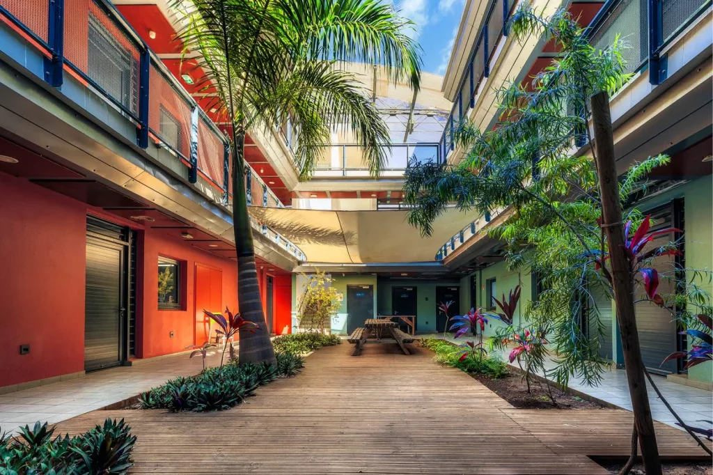
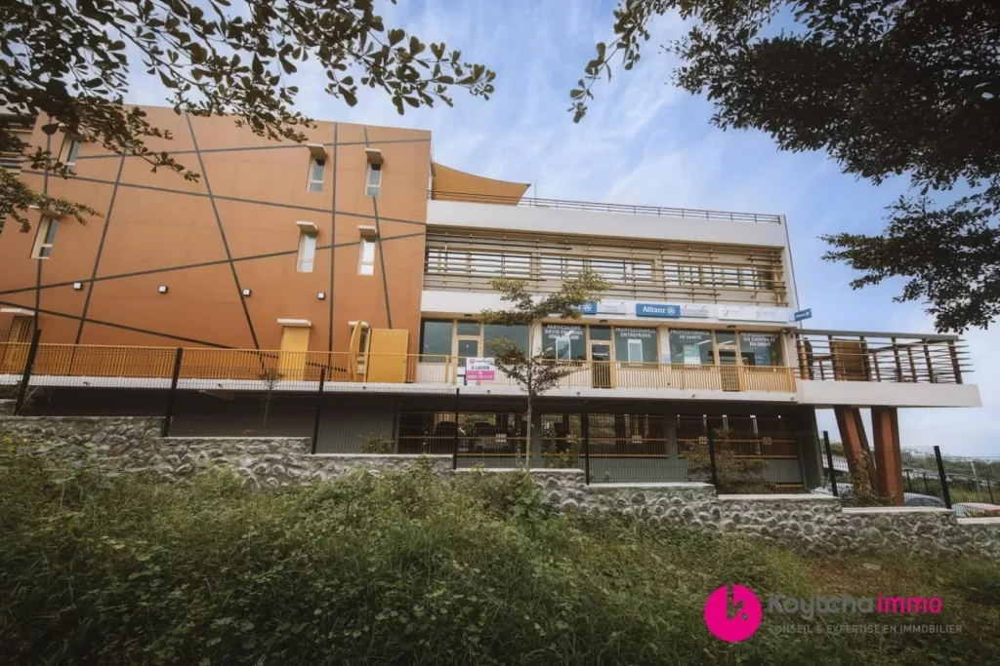
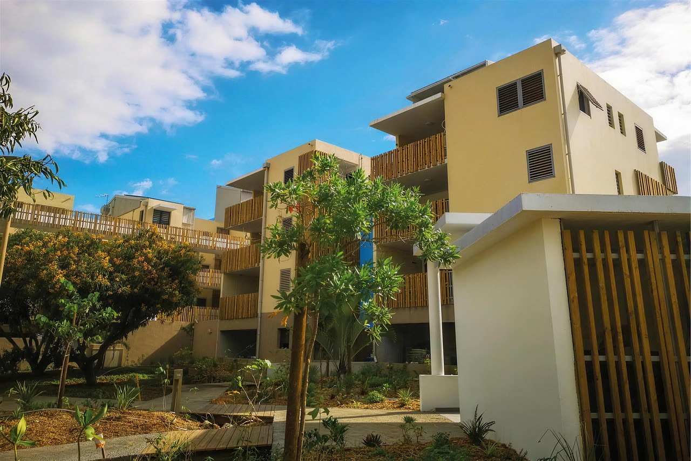
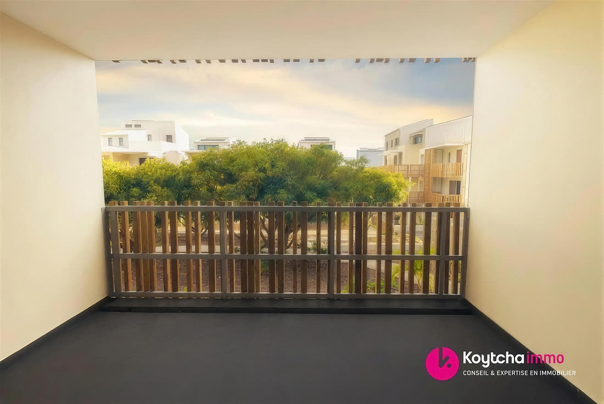
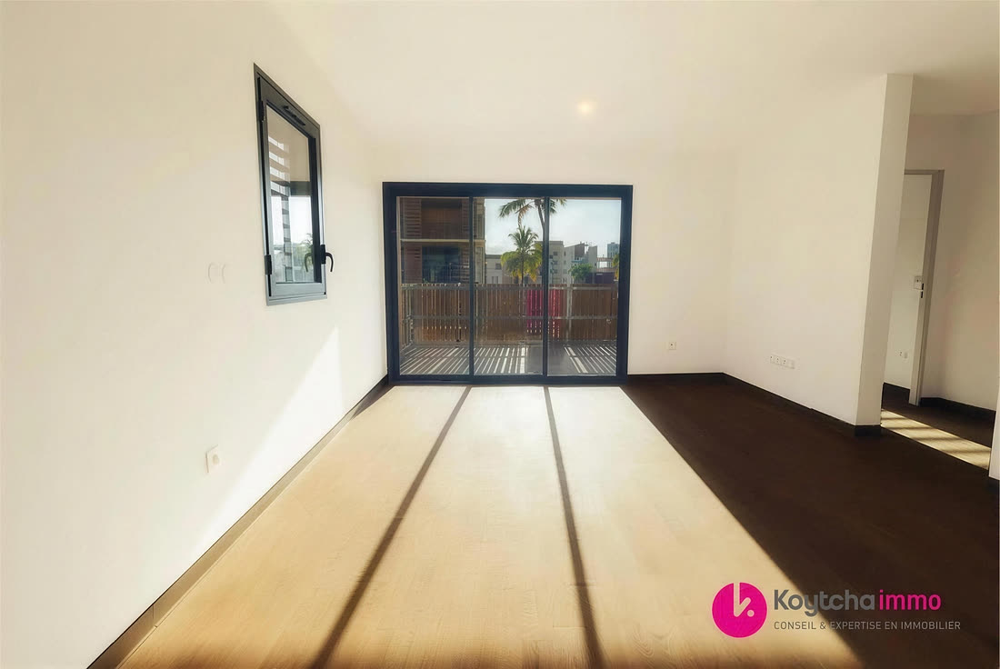
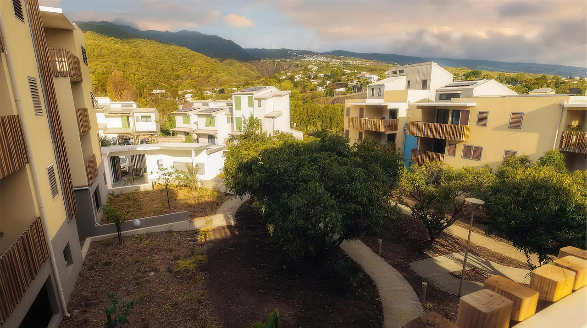
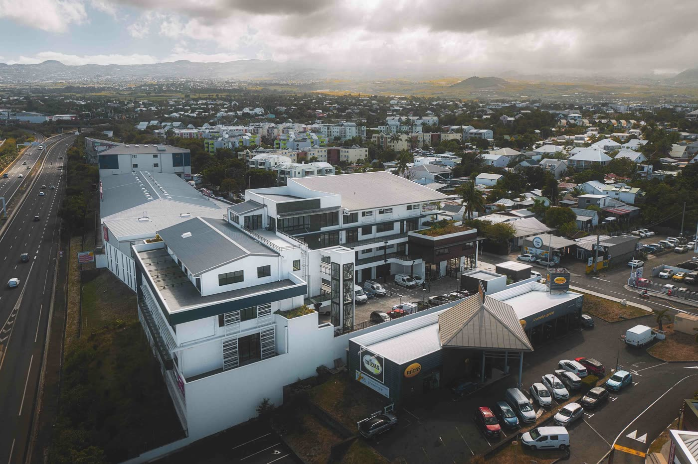
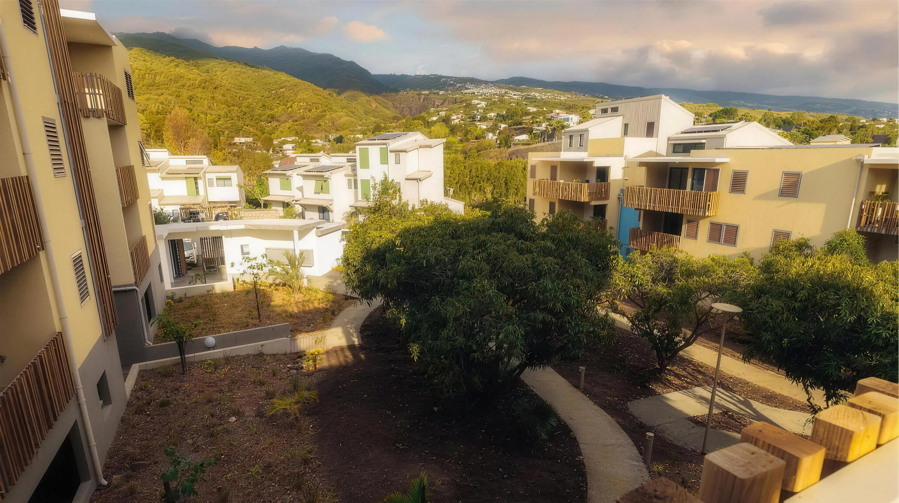

30 ans d'expertise locale. Biens rares, accompagnement sur mesure, résultats durables.
Sélectionnés pour vous
Que vous souhaitiez développer votre activité professionnelle, investir pour défiscaliser, diversifier votre patrimoine ou préparer votre retraite, Koytcha Immo vous accompagne et vous délivre toutes les clés pour réussir votre investissement. Découvrez sans plus attendre nos opportunités exclusives du moment !
Notre métier
Koytcha Immo accompagne depuis 2004 avec le même niveau d'exigence les entreprises, propriétaires et investisseurs sur l'ensemble de leurs enjeux immobiliers.
Que vous cherchiez à investir, à vendre, ou que vous soyez tout simplement à la recherche d'un achat ou d'une location, Koytcha Immo vous apporte toute son expertise et son savoir-faire afin de vous faciliter la vie tout en optimisant votre projet.
Grâce à notre équipe, nous sommes en mesure de répondre à tous vos besoins tant en résidentiel qu'en professionnel :




Agissant également en tant que promoteur immobilier, Koytcha Immo commercialise de nombreux projets innovants et adaptés aux spécificités locales, tels que des immeubles résidentiels, des bureaux, des locaux d'activités, ou encore des centres d'affaires comme les projets phares Ze Bure@u 1 et 2 (plus de 3 000 m² chacun) situés à l'Éperon.


Notre philosophie
Le client au cœur de nos engagements.
Que vous soyez investisseurs, utilisateurs, particuliers à la recherche d'un bien à acheter ou particuliers investisseurs, vos problématiques sont variées. Nous y apportons des expertises spécifiques.
Créer de la valeur à chaque étape de la vie d'un bien immobilier.
Accompagner durablement nos clients tout au long du cycle de vie immobilier.
Proposer des solutions pertinentes et originales dans une optique de long terme.
Grâce à une offre diversifiée de produits immobiliers implantés sur des emplacements de choix, Koytcha Immo vous aide à optimiser vos investissements professionnels à La Réunion. Particuliers comme investisseurs, nos équipes sont à vos côtés pour comprendre vos enjeux, vous conseiller et vous aider à concrétiser votre stratégie immobilière.
Plus qu'un lieu, une expérience. Découvrons ensemble le projet qui vous ressemble.
Contactez-nous